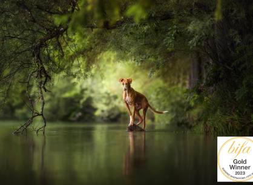

Pet Photographer of the year 2019

Kategorie „Rescued Dogs“ 2019

Seit über zehn Jahren lebe ich in Deutschland und fotografiere seit 2018 Tiere. Mein Leben in der Welt der Fotografie dauert bereits fast vierzig Jahre an. Es begann in meiner fernen sowjetischen Kindheit mit einer Filmkamera, Schwarz-Weiß-Film und Stunden, die ich in einem dunklen Raum mit einer roten Lampe verbrachte.
Mein Wunsch, die Schönheit um mich herum so vielen Menschen wie möglich zu zeigen, führte mich durch verschiedene Genres der Fotografie - Landschaften, Sport, Porträts, Veranstaltungen, wilde Natur... Ich war sogar Reporterin und erzählte durch meine Fotos von Ereignissen. Bis ich schließlich erkannte, dass die besten Modelle für mich Tiere sind.

Überwältigt von der Hundefotografin Julia: Ihre Bilder sind wahre Kunst, die Seelen meiner zwei Hunde und meines Katers einfangen. Mit Talent, Leidenschaft und einem Auge fürs Detail macht sie jede Session einzigartig. Unvergessliche Erinnerungen, absolut empfehlenswert!
Kann Nadine nur empfehlen! Werde den Tag nie wieder vergessen, auch dank der absolut tollen Bilder.


Kategorie „Rescued Dogs“ 2019

OVERALL WINNER 2019
Kategorie „Rescued Dogs“ 2019